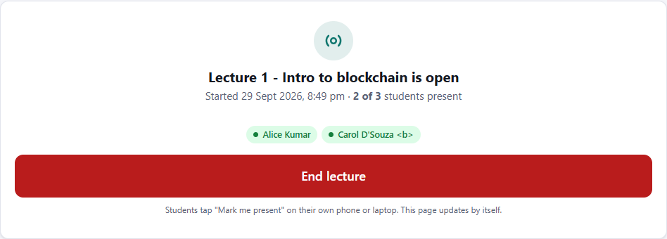
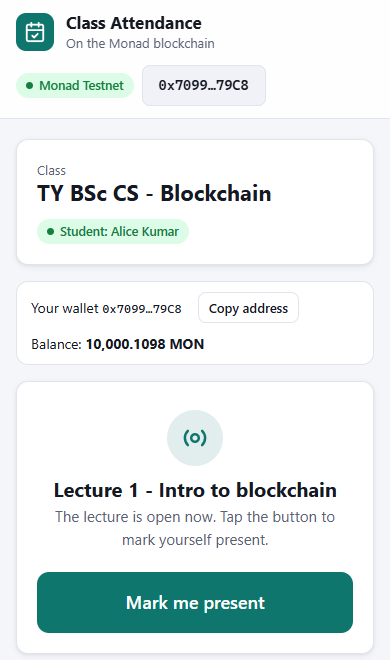

Students mark themselves present with one tap. Every mark is saved on the Monad blockchain, so nobody can change it later.
Everything here runs on Monad Testnet, a practice blockchain. The MON coins are free test coins with no real value. You never pay real money.
MetaMask is a free wallet. It works like your login for the app.
How much you need:
| Action | Cost (test MON) |
|---|---|
| Create your class (once) | about 0.22. Your wallet needs at least 0.5 at that moment |
| Start or end a lecture | about 0.01 each |
| Add students | about 0.03, plus the MON you give them |
| A student taps "Mark me present" | about 0.011 (paid by the student from the MON you give them) |
Tip: collect 2 or more MON before you start. The faucet can be used again later.
Students need a web link they can open on their phones. This step gives you one, for free, using a service called Vercel.
Double-click 1 - Open App on This Laptop.bat. The app opens at http://localhost:5510. Keep the black window open while you use it. This version only works on your laptop, so students can't use it. Use step 3 for real classes.
Your class is saved on the blockchain. The home page of your app shows it under Your classes, and the class link always opens it.
On your class page, under Share the class link, click Share on WhatsApp and send the link to your class group. Then pick one of these two ways:
Way A (recommended): you add them and give them free MON.
Priya Sharma, 0x1a2b… Rahul Verma, 0x3c4d…
Way B: students join by themselves. Click Turn on next to "Students can join by themselves". Students then type their name and tap Join class. For this they need their own MON from the faucet. Turn it off when everyone has joined, so strangers can't join. You can remove anyone with the × in the student list.
The Students table shows ✓ and – for each lecture, with totals and percentages. Click Download for Excel to get the full register as a spreadsheet.
When students' MON runs low, use Send this much MON to every student at the bottom of the table.


Copy this, add your class link at the end, and send it on WhatsApp:
Hi everyone! Attendance for our class is now on the blockchain. 1. Install the MetaMask app from the Play Store / App Store and create a wallet. Write down the 12 secret words and keep them safe. 2. Open the class link below. On a phone, tap "Open in MetaMask app". 3. Tap "Connect". If you are not in the class yet, tap "Send it on WhatsApp" and send it to me. 4. During each lecture, open the link and tap "Mark me present". That's it! Class link:
Click More info, then Run anyway.
MetaMask may be waiting behind the browser window. Click the MetaMask fox at the top right and press Confirm.
Click any button in the app, and approve switching to Monad Testnet in MetaMask.
Get more free MON at faucet.monad.xyz. If it's a student, send them some with Send this much MON to every student.
You pressed Reject. Nothing was changed. Click the button again and choose Confirm.
Open your app link. Your classes are listed under Your classes on the home page (in the same browser). You can also use the class link you shared on WhatsApp.
In MetaMask choose Import using Secret Recovery Phrase and type your 12 words. Only the wallet that created the class can start and end lectures.
Double-click 2 - Put App Online (Vercel).bat again. You keep the same link.
Built on Monad Testnet (chain ID 10143) · Explorer: testnet.monadvision.com